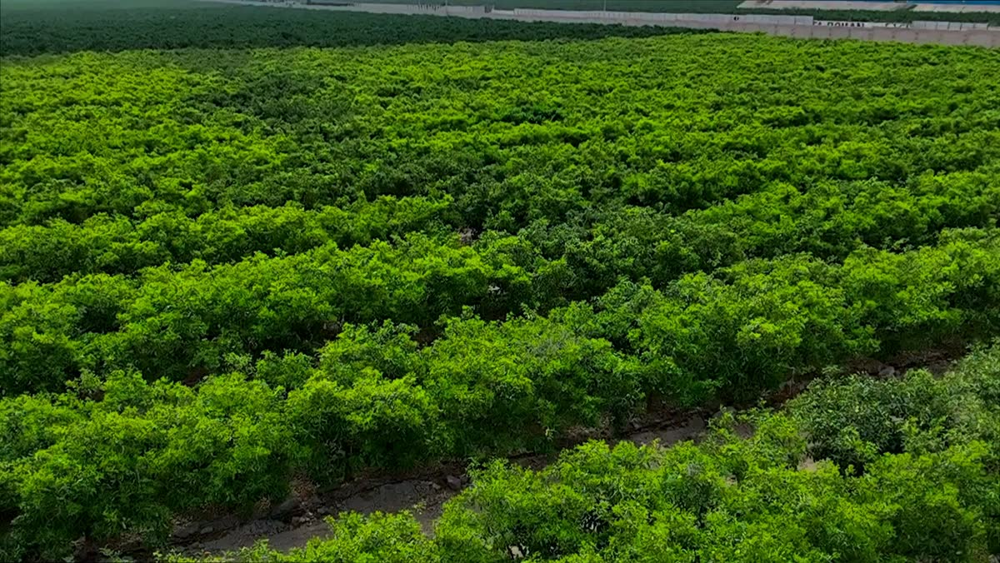

Mapear con el dron
Planificamos la captura y preparamos las capas del lote para localizar diferencias en el cultivo.
IMAGEN RGB + ÍNDICESVALLES DE HUAURA–SAYÁN · MANDARINAS Y PALTOS
Conectamos mapas multiespectrales, evaluaciones de campo y seguimiento por lote para ayudarte a decidir dónde revisar primero.

VUELO REALGrabación real con DJI Mavic 3M · Vista previa sin sonido.
Una lectura completa de tu cultivo
01 Observar02 Verificar03 Dar seguimientoSERVICIOS
Elige el punto de partida. Definimos contigo el alcance según el cultivo, la ubicación y la información que necesitas.
Cargando servicios…
MUESTRAS DEL PROYECTO
Explora imágenes de paltos y cítricos. Abre cada mapa para revisar la captura completa y su escala original.
Los colores corresponden a la escala de cada captura. Un cambio de índice orienta la inspección; por sí solo no determina la causa de una anomalía.
UN FLUJO DE TRABAJO CONECTADO
Reúne la vista aérea y lo que sucede a pie de lote. Así puedes volver a una ubicación y revisar su evolución.
Planificamos la captura y preparamos las capas del lote para localizar diferencias en el cultivo.
IMAGEN RGB + ÍNDICESRegistra observaciones, fotografías y ubicación desde el celular. Prepara los lotes antes de salir sin conexión y sincroniza al recuperar la red.
EVALUACIÓN DE CAMPOConsulta las capas y evaluaciones organizadas por lote y fecha para acompañar las siguientes inspecciones.
HISTORIAL POR LOTEMapas del lote, zonas para revisar y registros de campo, según el servicio acordado. Definimos formatos y entregables al preparar la propuesta.
HABLEMOS DE TU LOTE
Atendemos mandarinas y paltos en los valles de Huaura–Sayán. Cuéntanos la superficie y qué te gustaría revisar para preparar una propuesta según tu lote.
La superficie, ubicación y tipo de evaluación se revisan antes de cotizar. Preparar el mensaje no confirma una visita.
SOLICITUD PREPARADA
Todavía no se ha enviado. Puedes editar los datos o copiar el resumen.
ANTES DE EMPEZAR
Cultivo, superficie aproximada, ubicación y objetivo de la evaluación. Si tienes límites del lote o mapas anteriores, podemos revisar su disponibilidad al coordinar el trabajo.
El mapa ayuda a localizar diferencias para orientar el recorrido. La causa se revisa con observaciones y, cuando corresponda, otras mediciones en campo.
Prepara y descarga previamente los datos y capas que usarás, y verifica su disponibilidad sin conexión antes de salir. Los registros locales se sincronizan con DROMOD cuando vuelves a tener acceso al servidor.
Podemos organizar la información por lote y fecha para revisar la evolución. Conviene acordar las áreas de interés y condiciones de captura para que la comparación sea útil.
Se define en la propuesta según ubicación, superficie, alcance y condiciones del vuelo. La solicitud no genera un precio automático ni reserva una fecha.
DESDE EL CAMPO
Cargando artículos…